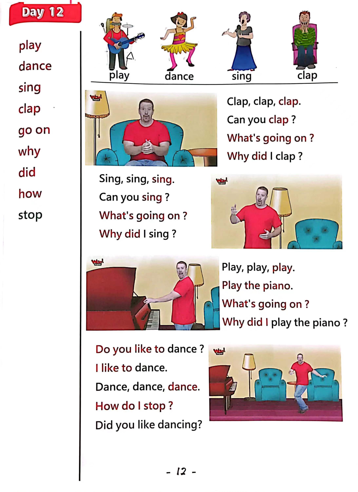

Day 12
Unit 4 · story
教材重点
教材重点依据网盘文件“第三级红色每日打卡全.pdf”，PDF 第 14 页对应 Day 12；以原图为准，避免对图片文字做不可靠的自动识别。
网盘教材重点原图 · PDF 第 14 页对应 Day 12

Unit 4 · story · 5–6岁
sing · play · hello · dance
Hello, hello, hello, hello, everyone. Hello. Hello.
台词本为机器转写，可能存在识别误差；不等同于视频逐字原声。
详细内容
Part 1 核心词汇
必须掌握 · 4 个Part 2 跟读句型与句型拓展
左侧保留台词本原句，右侧为替换练习；拓展内容不是视频逐字台词。
Hello, hello, hello, hello, everyone. Hello. Hello.
Hello. Hello.
Everyone say, hello. Everyone.
Play, dance, sing and club.
Wow, read.
Part 3 台词本全文
来源：第3级台词本 · 012.Wow!Red - Unit 4 'music' - part 2 story_4_2.pdf。以下保留网盘 PDF 的机器转写文本，仅清理了文件路径页眉和空行。
Hello, hello, hello, hello, everyone. Hello. Hello.
Hello. Hello.
Everyone say, hello. Everyone.
Play, dance, sing and club.
Wow, read.
Okay away, hello, hello, boys and girls.
I'm sorry I haven't got time to play today. I'm reading the newspaper.
Maybe you can go and play with Maggie, I don't know where Maggie is, but anyway, bye for now, see
you soon. Bye.
Oh, hello, steve won't play, but HA, HA, HA, watch this. HA, HA, HA,
Club club, club, club, club, club, club.
OK, stop, what's going on?
Oh, why did I clap.
Oh, that's very strange.
Hey, can you clap? Yeah, just with two hands and clap. Okay. Clap with me, ready, clap.
Clap, clap. Yeah.
What's going on?
Oh, well, where's my newspaper? Now, let's make Steve.
Sing, sing,
Sing, sing, sing, sing, sing, sing, sing.
Steve can't sing, sing, sing with me. Hey,
Why did I sing.
Oh, ha, can you sing?
Sing with me like this, la la la la la la la la la.
You try sing, I ready, la la la la la la la la la la, well done.
But why did I sing very strange.
Oh, I need to sit down, oh, don't sit down. Hey,
Watch, hey play, play the piano, play, play, play the piano play, play, play the piano. A.
Hey, oh, what's going on.
Why did I play the piano Why did I play the piano Do you know.
What.
/
-
/3/012.Wow!Red - Unit 4 'music' - part 2 story_4_2.txt[2022/3/29
星期二
6:47:14]
It's Maggie.
Really, where is that naughty, naughty bird? Maggie, oh, this is.
What she got. Hey Maggie, give that to me.
What's this look, clap, sing.
Play and dance.
Ah, hey, do you like to dance I like to dance. Shall I.
Yeah, ok, here we go, oh, dance, dancing.
Come on, dance, dance, dance, dance, yeah, oh,
Lucky, how do I stop.
Oh, oh,
Oh thank you, maggie, did you like dancing? Yeah, see you next time.
Bye for now. Bye. Bye.